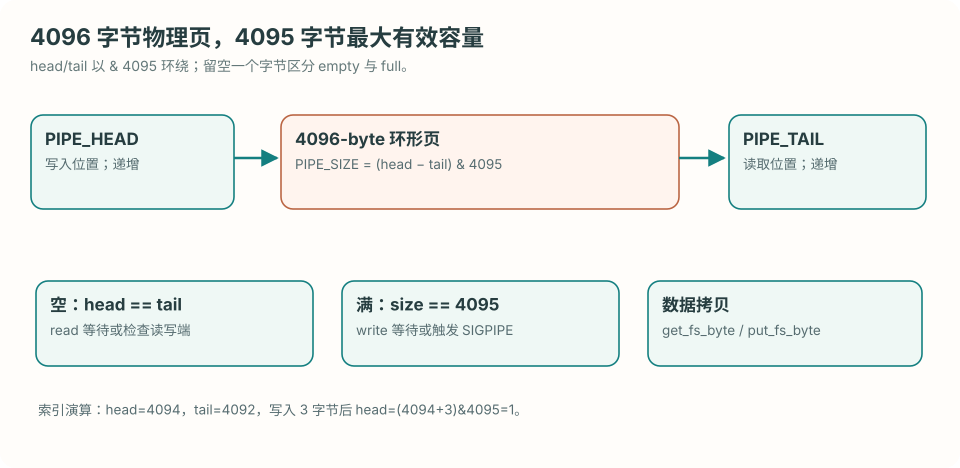
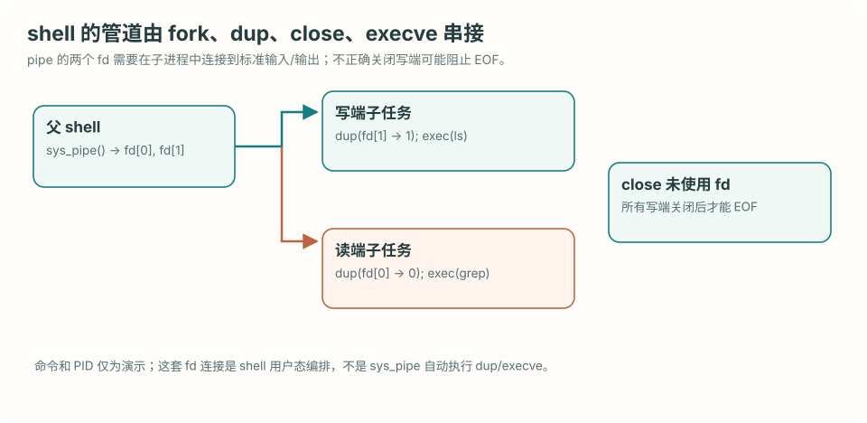

管道与 exec：一页环形缓冲区如何串起两个进程
从 sys_pipe 分配两个文件描述符，到 PIPE_HEAD/TAIL、SIGPIPE、shell 的 fork/dup/close，再说明 execve 如何在同一 PID 中切换 a.out 映像。
pipe · 4095B · execve两个进程怎样在不落盘的情况下传输文本？
在 shell 里执行 producer | consumer，写进标准输出的字节会被另一进程从标准输入读到。中间不必创建普通文件，但必须有一个内存缓冲区承接生产者和消费者的速度差。Linux 0.11 的实现选择一页 4096B 的环形存储，但将最大有效数据量限制为 4095B。
这里最值得区分的是三个层次：sys_pipe 分配 fd 和匿名内存 inode，read_pipe/write_pipe 操作字节队列，shell 自己通过 fork/dup/close/exec 把两个 fd 链接到不同任务。内核的 sys_pipe 不会自动替你启动 shell 命令。

sys_pipe 为什么需要两份 file 对象和一个 inode
fs/pipe.c 中 sys_pipe(unsigned long *fildes) 扫描全局 file_table[NR_FILE] 找两个空闲 struct file，再扫描当前任务的 filp[NR_OPEN] 找两个空闲描述符，然后调用 get_pipe_inode() 创建特殊内存 inode。两份 file 的 f_inode 指向同一个匿名 inode，但 f_mode 分别设成 1（读端）和 2（写端）。
f[0]->f_inode = f[1]->f_inode = inode;
f[0]->f_pos = f[1]->f_pos = 0;
f[0]->f_mode = 1; /* read */
f[1]->f_mode = 2; /* write */
put_fs_long(fd[0],0+fildes);
put_fs_long(fd[1],1+fildes);这个 inode 不需要磁盘超级块或数据区号；get_pipe_inode 向物理页分配器申请一页数据，用 i_size 暂存页地址，用 i_zone[0]、i_zone[1] 存队列的 head/tail 索引，并设置 i_pipe 标记。这种历史复用手法不能照搬成现代 pipe_inode_info。
用 head、tail 三个公式证明 4095 的边界
#define PIPE_HEAD(inode) ((inode).i_zone[0])
#define PIPE_TAIL(inode) ((inode).i_zone[1])
#define PIPE_SIZE(inode) ((PIPE_HEAD(inode)-PIPE_TAIL(inode))&(PAGE_SIZE-1))
#define PIPE_EMPTY(inode) (PIPE_HEAD(inode)==PIPE_TAIL(inode))
#define PIPE_FULL(inode) (PIPE_SIZE(inode)==(PAGE_SIZE-1))把两个指针都限制在 [0,4095]，使用 &4095 环绕。若允许写满 4096 字节，head 会重新等于 tail，与“没有数据”的状态无法区分，因此必须空出一个字节。可用空间是 (4096-1)-PIPE_SIZE。
PAGE_SIZE = 4096
head,tail = 4094,4092
size = (head-tail) & (PAGE_SIZE-1)
next_head = (head+3)&(PAGE_SIZE-1)
print(size,next_head,(next_head-tail)&(PAGE_SIZE-1))
# 2, 1, 5head=tail=0 时，管道是满还是空？（展开核对）
空，因为 PIPE_SIZE=0。若环形页中已有 4095 字节，(head-tail)&4095=4095 才表示满，这恰好需要保留一字节区分两态。
read_pipe 的等待、EOF 与字节复制
read_pipe 每次读取先计算 PIPE_SIZE(*inode)。当队列空，代码先 wake_up(&inode->i_wait) 唤醒可能因满而睡的写端，再检查 inode->i_count != 2；该早期实现将其作为没有写端的条件，返回此前已读字节数（可能为 0，即 EOF），否则用 sleep_on(&inode->i_wait) 等待新数据。
存在数据时，一批读取不能跨越 4096B 页尾；代码按 PAGE_SIZE - PIPE_TAIL、请求剩余数量、现有数据量三者的最小值确定 chars，然后增加 tail、环绕并使用 put_fs_byte 将内核缓冲区字节写入用户空间。读完再唤醒等待者。
write_pipe 的阻塞与 SIGPIPE 分支
write_pipe 在没有空间时计算 (PAGE_SIZE-1)-PIPE_SIZE，若没有读者（源码检查 inode->i_count != 2），就将 SIGPIPE 对应的位加入 current->signal，并返回已经写入的字节数；没有已写入字节时该原版路径返回 -1。否则等待可用空间。
while (!(size=(PAGE_SIZE-1)-PIPE_SIZE(*inode))) {
wake_up(&inode->i_wait);
if (inode->i_count != 2) {
current->signal |= (1<<(SIGPIPE-1));
return written?written:-1;
}
sleep_on(&inode->i_wait);
}如果代码已经成功写入一些字节，再发生空间不足的情况，结果与完全没有写入是两种不同的返回值。不能把这段旧内核的行为改写成现代 Linux write API 的完整原子性保证，也不能声称任何长度的管道写入都有跨进程消息边界。
shell 如何把 pipe 接到标准输入输出
shell 的管道表达式通常要先创建一对 fd，随后 fork 子任务，在写端子任务中把管道写 fd 复制到标准输出 fd=1；在读端子任务中把读 fd 复制到标准输入 fd=0，再关闭每个任务不需要的端点，最后各自 execve 到命令本体。

如果父 shell 或某个子任务保留了无用的写端 fd，读任务就可能一直认为还有写者，管道空了也收不到 EOF。因此“记得关闭无用 fd”不是风格问题，而是决定程序何时终止的实际机制。采用 dup2 时，务必核对目标平台的系统调用包装与错误返回；本章侧重描述 0.11 系统机制。
shell 为什么在 execve 前还要 close 掉不需要的管道端？（展开核对）
因为继承的描述符会增加 file/inode 的引用，不关掉多余写端会使下游读进程无法按预期识别没有写者的 EOF。
execve 不创建新进程：0.11 是 a.out 的按需装入
fs/exec.c 的 do_execve 对常规二进制检查历史 a.out 格式，主要走 ZMAGIC 的按需装载路径；#! 则让它转换为解释器执行。它先取得可执行文件 inode、检查访问权限和头部，再替换旧进程的用户页表、更新 LDT 限界、准备参数环境变量和新栈，最后把系统调用返回现场改成新入口。当前 PID 没有改变。
源码特别说明：只需要加载头部，后续发生缺页时，do_no_page 再利用 current->executable inode 读取实际指令/数据页。旧稿写“execve 一次把全部 text/data/BSS 装进物理内存”会违背原版 1991 年引入 demand-loading 的实际实现。
grep -n 'do_execve\|ZMAGIC\|sh_bang\|MAX_ARG_PAGES' fs/exec.c
grep -n 'current->executable\|bread_page' mm/memory.c
grep -n '_sys_execve\|_sys_fork' kernel/system_call.s一步步验证而不是凭“管道很简单”猜行为
grep -n 'PIPE_HEAD\|PIPE_TAIL\|PIPE_SIZE\|PIPE_FULL' include/linux/fs.h
grep -n 'int read_pipe\|int write_pipe\|int sys_pipe\|SIGPIPE' fs/pipe.c
grep -n 'get_pipe_inode\|i_pipe' fs/inode.c
grep -n 'do_execve\|ZMAGIC' fs/exec.c预期确认环形页在 inode 内存字段中登记、读端与写端的实际错误分支、execve 的 a.out 头校验。这个纯源码实验不会自动运行任何 pipeline，也不推断 PIPE_BUF 原子性或进行多进程压力测试。
下一章的衔接
- fs/pipe.c：真实读写/创建逻辑和 SIGPIPE。
- fs/inode.c：get_pipe_inode 与页引用。
- include/linux/fs.h：PIPE_* 宏、file/inode 结构。
- fs/exec.c：a.out demand-loading 和脚本解释器。
- kernel/system_call.s：execve 的汇编包装。
管道传送的是内存页内字节；文件系统把持久化写入交给块层。下一章研究后者如何从 buffer_head 发出等待硬件完成的 request。